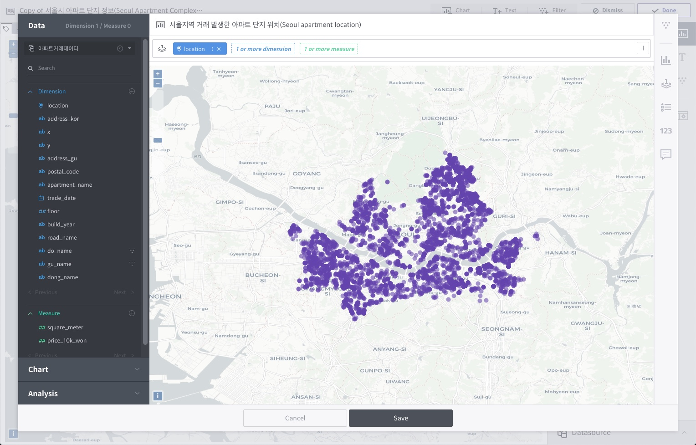
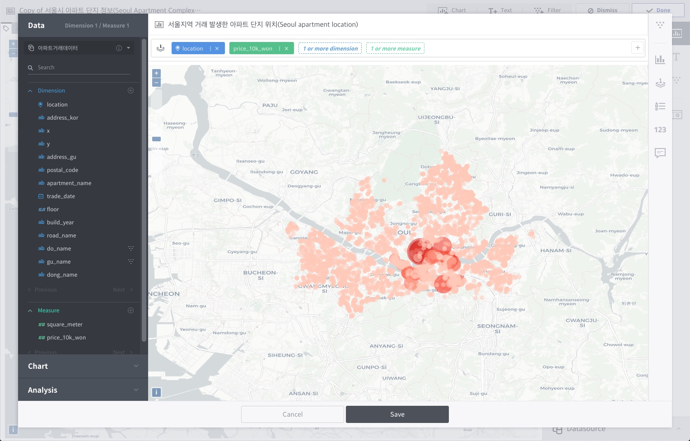

맵뷰와 공간 연산¶
메타트론 디스커버리는 3.1.0 버전부터 위치 데이터를 시각화할 수 있는 맵뷰 기능을 제공하고 있습니다. 맵뷰는 기존 차트 유형들과는 다른 차트 생성 조건을 갖고 있습니다.

위치 속성 의 차원값이 1개 이상 필요합니다.
열/행/교차 선반이 아닌 맵 레이어 선반 에 데이터를 배치합니다.
레이어 별 스타일 속성 을 지정합니다.
공간 연산 이 가능합니다.
위치 속성의 차원값¶
맵뷰를 사용하기 위해서는 Point, LineString, Polygon 과 같은 WKT Geometry 형식의 데이터로 이루어진 차원값(dimension) 칼럼을 레이어 선반에 올려야 합니다. 위치값의 종류는 크게 세 가지 종류가 있습니다.
Point: x, y로 이루어진 2D 좌표 지오메트리 타입입니다. GPS 데이터처럼 위도와 경도값이 있는 경우입니다.
Line: 라인 좌표를 가진 지오메트리 타입입니다. WKT 형식으로 만들어진 LineString, MultiLineString 지오메트리를 지원합니다.
Polygon : 도형 좌표를 가진 지오메트리 타입입니다. WKT 형식으로 만들어진 Polygon, MultiPolygon 지오메트리를 지원합니다.

맵 레이어 선반¶

맵뷰에서는 다른 차트 유형과는 달리 열/행/교차 선반이 아닌 맵 레이어 선반을 갖고 있습니다. 맵 레이어 선반에는 반드시 위치 속성의 차원값을 1개 배치해야 합니다.

맵 레이어 선반에 문자 속성의 차원값을 배치하면 자동으로 해당 차원값으로 색상을 분류하여 표현하며 데이터 툴팁에 해당 차원값이 표기됩니다.

또한 측정값을 레이어 선반에 배치하면 측정값으로 색상을 분류하고 동시에 해당 측정값을 기준으로 포인트 크기를 다르게 표현합니다. 차원값과 마찬가지로 툴팁에 해당 측정값이 표기됩니다.

레이어 선반 추가¶
레이어 선반 우측의 + 버튼을 누르면 첫번째 레이어 위에 또 하나의 레이어를 추가할 수 있습니다. 각각의 레이어는 서로 다른 데이터소스를 사용해야 하며, 하나의 레이어에 두 개 이상의 데이터소스의 칼럼을 배치할 수 없습니다. 현재 최대 2개의 레이어 선반을 지원합니다.

맵뷰 레이어 스타일 속성¶
공통 설정¶
지도 레이어에서 기본 지도를 표현하는 맵 스타일의 유형을 선택할 수 있습니다. OpenStreetMap을 활용하여 세 가지의 맵 스타일을 기본적으로 제공하고 있습니다.

Open Street Map Light (기본값)
Open Street Map Dark
Open Street Map Colored
레이어 설정¶
레이어의 표현 방식을 설정합니다. 레이어 선반을 추가하면 1번 레이어와 2번 레이어에 대한 설정 메뉴가 각각 별도로 생성됩니다.
Point 타입 레이어 속성¶

레이어 이름: 맵뷰의 범례 및 툴팁 설정시 나타나는 레이어 명칭을 설정합니다.
레이어 유형: 데이터 포인트를 지도에 나타내는 유형을
포인트/히트맵/헥사곤/클러스터중 하나로 변경할 수 있습니다. 기본값은 포인트입니다.포인트 유형: 레이어 유형이
포인트인 경우 데이터 포인트의 모양을 변경할 수 있습니다.원형/사각형/삼각형으로 표현 가능하며 기본값은 원형입니다. 클러스터 사용이 OFF 로 설정되어야 맵에 표현됩니다.색상: 레이어 선반에 올린 문자 속성의 차원값이나 측정값으로 데이터 포인트의 색상을 구분하여 표현할 수 있습니다. 색상 기준이 없는 경우 팔레트에서 색상을 변경할 수 있습니다. 투명도를 %로 설정할 수 있습니다.
크기: 레이어 유형이
포인트인 경우 레이어 선반에 올린 측정값을 기준으로 데이터 포인트의 크기를 구분하여 표현할 수 있습니다.아웃라인: ON으로 설정시 각 데이터 포인트의 아웃라인을 그립니다. 기본값은 OFF이며 색상 및 굵기를 설정할 수 있습니다.
클러스터 범위: 레이어 유형이
클러스터인 경우 클러스터링 범위를 %로 지정할 수 있습니다. 데이터 포인트가 많을수록 클러스터를 사용하는 것이 브라우저 성능에 유리합니다.흐림효과: 레이어 유형이
히트맵일 경우 히트맵의 흐림 효과를 조절할 수 있습니다. 기본값은 20%입니다.반경값: 레이어 유형이
히트맵또는헥사곤일 경우 표시 반경을 1부터 100사이의 값으로 조절할 수 있습니다.
Line 타입 레이어 속성¶

레이어 이름: 맵뷰의 범례 및 툴팁 설정시 나타나는 레이어 명칭을 설정합니다.
색상: 레이어 선반에 올린 문자 속성의 차원값이나 측정값으로 데이터 포인트의 색상을 구분하여 표현할 수 있습니다. 색상 기준이 없는 경우 팔레트에서 색상을 변경할 수 있습니다. 투명도를 %로 설정할 수 있습니다.
굵기: 라인의 굵기를 설정할 수 있습니다.
선 유형: 실선/점선/파선 중 하나를 선택합니다. 기본값은 실선입니다.
Polygon 타입 레이어 속성¶

레이어 이름: 맵뷰의 범례 및 툴팁 설정시 나타나는 레이어 명칭을 설정합니다.
색상: 레이어 선반에 올린 문자 속성의 차원값이나 측정값으로 데이터 포인트의 색상을 구분하여 표현할 수 있습니다. 색상 기준이 없는 경우 팔레트에서 색상을 변경할 수 있습니다. 투명도를 %로 설정할 수 있습니다.
아웃라인: ON으로 설정시 각 폴리곤의 아웃라인을 그립니다. 기본값은 OFF이며 색상 및 굵기를 설정할 수 있습니다.

공간 분석¶
메타트론 디스커버리 맵뷰에서는 두 개의 레이어 간의 간단한 공간 분석 기능을 지원합니다. 왼쪽 분석 탭에서 연산식을 설정할 수 있으며, 현재 버전에서 공간 연산식은 두 종류를 지원합니다.

Within: 기준 레이어의 요소와 비교 레이어의 요소 사이 거리를 지정하여 거리 내에 존재하는 값을 반환합니다.
Intersection: 기준 레이어에서 비교 레이어와 겹치는 부분을 반환하는 방식입니다. Polygon > Line > Point의 순서로 더 큰 Geometry가 기준이 되는 경우, 결과 반환값이 달라질 수 있습니다.
각 연산식에서 추가적으로 설정할 수 있는 값은 아래와 같습니다.
근접 거리 입력(Buffer): 기준 레이어와 비교 레이어 간에 비교할 거리를 숫자로 입력하도록 설정할 수 있습니다. 거리 단위를 미터 또는 킬로미터로 변경할 수 있습니다.
단계구분도 보기 (Choropleth map): 연산 결과 레이어를 단계구분도 형태로 표시할 수 있습니다. 단계구분도의 색상 기준을 선택할 수 있으며 겹치는 데이터의 수(COUNT)를 기본으로 색상을 나눕니다. 만약 기준 레이어에 측정값이 있을 경우 해당 측정값을 기준으로 색상을 변경할 수 있습니다.